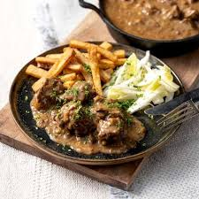

Stoofvlees met frietjes - Foto: libelle-lekker.be
Bescjrijving
Stoofvlees is vlees dat op laag vuur gedurende lange tijd gegaard is
(gestoofd) om het mals te maken. Tijdens het sudderen worden stoffen als
collageen en elastine afgebroken die het vlees stug houden. Doordat de
structuur van rundvlees uit vezels bestaat, valt het na het sudderen in
draden uit elkaar.